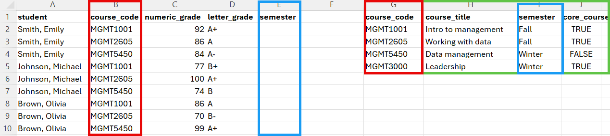
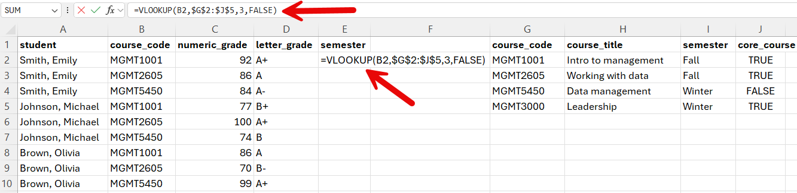
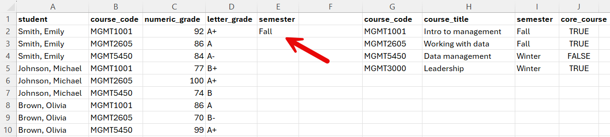
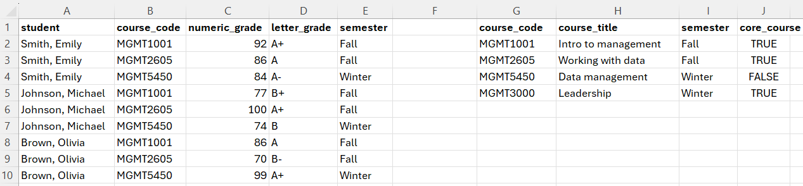

| student | grade |
|---|---|
| Smith, Emily | MGMT1001, 92 (A+); MGMT2605, 86 (A); MGMT5450, 84 (A-) |
| Johnson, Michael | MGMT1001, 77 (B+); MGMT2605, 100 (A+); MGMT5450, 74 (B) |
| Brown, Olivia | MGMT1001, 86 (A); MGMT2605, 70 (B-); MGMT5450, 99 (A+) |
6 Learning objectives
- Tidy data principles
- Separting and merging columns
- Pivoting and unpivoting columns
- Combining datasets
6.1 Tidy data
Data is stored in all kinds or places, can be accessed in many different ways, and comes in all kinds of shapes and forms. Therefore, much of the data scientist’s work is related to collecting, processing, and cleaning data to get it ready for analysis.
Here are a few principles that tidy data needs to follow to be usable:
Each column represents a single variable.
Each cell contains a single value.
Each row contains a single observation.
6.2 Tidying data
6.2.1 Splitting columns
Let’s take a look at a dataset that is not tidy. You can download the dataset here to practice following the steps below. There is also a video walkthrough with additional explanations at the end of the section.
We can see that for each course, students are listed in a single cell, and their grades as well. To make this data tidy, a first thing we might might to do is seperate each grade observation into its own row. We have nine grades in total in the set, so we would expect nine rows in total:
- Select the grade column.
- In the Transform menu, click on Split columns.
- Select the delimiter. In this case, choose custom and then comma followed by a space:
; - Click on Advanced options.
- Select Split into Rows.
| student | grade |
|---|---|
| Smith, Emily | MGMT1001, 92 (A+) |
| Smith, Emily | MGMT2605, 86 (A) |
| Smith, Emily | MGMT5450, 84 (A-) |
| Johnson, Michael | MGMT1001, 77 (B+) |
| Johnson, Michael | MGMT2605, 100 (A+) |
| Johnson, Michael | MGMT5450, 74 (B) |
| Brown, Olivia | MGMT1001, 86 (A) |
| Brown, Olivia | MGMT2605, 70 (B-) |
| Brown, Olivia | MGMT5450, 99 (A+) |
We made some progress, but now we need to separate the course code from the grades following these steps in the Power Query Editor:
- Select the grade column.
- In the Transform menu, click on Split columns.
- Select the delimiter. In this case, choose custom and then comma followed by a space:
, - Click on Advanced options.
- Select Split into Columns.
The result should look like this:
| student | course_code | grade |
|---|---|---|
| Smith, Emily | MGMT1001 | 92 (A+) |
| Smith, Emily | MGMT2605 | 86 (A) |
| Smith, Emily | MGMT5450 | 84 (A-) |
| Johnson, Michael | MGMT1001 | 77 (B+) |
| Johnson, Michael | MGMT2605 | 100 (A+) |
| Johnson, Michael | MGMT5450 | 74 (B) |
| Brown, Olivia | MGMT1001 | 86 (A) |
| Brown, Olivia | MGMT2605 | 70 (B-) |
| Brown, Olivia | MGMT5450 | 99 (A+) |
This is starting to look great, although we still have the issue of the numeric and letter grades being lumped together in a cell. To make this data truly tidy, we want to separate the numeric and the letter grades, following these steps in the Power Query Editor:
- Select the grade column.
- In the Transform menu, click on Split columns.
- Select the delimiter. In this case, choose space.
- Click on Advanced options.
- Select Split into Columns.
- Give an appropriate name to your new columns by double clicking on the current names.
| student | course_code | grade_numeric | grade_letter |
|---|---|---|---|
| Smith, Emily | MGMT1001 | 92 | (A+) |
| Smith, Emily | MGMT2605 | 86 | (A) |
| Smith, Emily | MGMT5450 | 84 | (A-) |
| Johnson, Michael | MGMT1001 | 77 | (B+) |
| Johnson, Michael | MGMT2605 | 100 | (A+) |
| Johnson, Michael | MGMT5450 | 74 | (B) |
| Brown, Olivia | MGMT1001 | 86 | (A) |
| Brown, Olivia | MGMT2605 | 70 | (B-) |
| Brown, Olivia | MGMT5450 | 99 | (A+) |
In this case, our letter grades are written in between parentheses, so we can remove the parentheses using the following steps:
- Select the column containing the letter grades
- Right click, select Replace values…
- Replace ( by nothing.
- Repeat step 1 and 2.
- Replace ) by nothing.
Your result should look like this:
| student | course_code | grade_numeric | grade_letter |
|---|---|---|---|
| Smith, Emily | MGMT1001 | 92 | A+ |
| Smith, Emily | MGMT2605 | 86 | A |
| Smith, Emily | MGMT5450 | 84 | A- |
| Johnson, Michael | MGMT1001 | 77 | B+ |
| Johnson, Michael | MGMT2605 | 100 | A+ |
| Johnson, Michael | MGMT5450 | 74 | B |
| Brown, Olivia | MGMT1001 | 86 | A |
| Brown, Olivia | MGMT2605 | 70 | B- |
| Brown, Olivia | MGMT5450 | 99 | A+ |
Finally, click on close and load in the home menu of the Power Query Editor. That’s it, now we have a tidy data set of grades!
6.2.1.1 Video walkthrough
6.2.2 Pivot and unpivot columns
For some reason, you may encounter datasets in matrix form where a group of columns are in fact different observations of a same variable (in this case, three course codes). You can download the example dataset here, which we use in the steps below. Again you will also find a video demo with more explanations at the end of the section.
The dataset looks like this:
| student | MGMT1001 | MGMT2605 | MGMT5450 |
|---|---|---|---|
| Smith, Emily | 92 | 86 | 84 |
| Johnson, Michael | 77 | 100 | 74 |
| Brown, Olivia | 86 | 70 | 99 |
6.2.2.1 Unpivot columns
The unpivot functions can be used to create a new variable (a new column) for which the values will be the three course codes. This can be done in just a few clicks:
- Select the three columns that have course codes as headers.
- In the Transform menu, click on Unpivot columns.
- Double click on the new attributes column to rename it to course_code.
- Double click on the new values column to rename it to grade,
The resulting table should look like this:
| student | course_code | grade |
|---|---|---|
| Smith, Emily | MGMT1001 | 92 |
| Smith, Emily | MGMT2605 | 86 |
| Smith, Emily | MGMT5450 | 84 |
| Johnson, Michael | MGMT1001 | 77 |
| Johnson, Michael | MGMT2605 | 100 |
| Johnson, Michael | MGMT5450 | 74 |
| Brown, Olivia | MGMT1001 | 86 |
| Brown, Olivia | MGMT2605 | 70 |
| Brown, Olivia | MGMT5450 | 99 |
That’s it, we’ve made the dataset tidy again!
6.2.2.2 pivot a column
If, for some reason, one wished to do the opposite operation and create multiple columns containing each possible value of a variable. This can be done with (you guessed it) the pivot funcition in the Power Query Editor.
- Select the column to pivot.
- In the Transform menu, click on pivot column.
- Select which column contains the values for the new columns (the grade column in this case)
- Under Avanced options, select Don’t aggregate.
The resulting table should look like the original dataset:
| student | MGMT1001 | MGMT2605 | MGMT5450 |
|---|---|---|---|
| Smith, Emily | 92 | 86 | 84 |
| Johnson, Michael | 77 | 100 | 74 |
| Brown, Olivia | 86 | 70 | 99 |
6.2.2.3 Video demo
6.2.3 Combining datasets
Sometimes the data will come in separate files so you will have to combine the pieces into a single and tidy dataset. If your two datasets contains parts of the same observations in the same order, you may be able to simply copy and paste columns from one dataset into the other. Similarly, if the two datasets have the same columns, you may be able to copy and paste rows from one dataset into the other. However, life is not always that easy, and sometimes you need to look up information about a particular entry in your dataset in another dataset with a different structure. Take the following two tables, for example.

We have on the one hand a table of grades that students received in three different courses, and on the other end a table of course details. If we want to determine, for example, the average grade in Fall or Winter semester course, we need to bring these columns into the grades dataset. In the section below, you will learn how to use the VLOOKUP function to perform this task.
6.2.3.1 The VLOOKUP() function.
The VLOOPKUP() function can be used to combine the columns of two datasets that do not necessarily share the same structure. It looks like this:
=VLOOKUP(lookup_value, table_array, column, col_index_num, [range_lookup])
The lookup value can be a single value, like “MGMT1001” or the coordinates of a cell that contains the value like B2.
The table array is the group of rows and columns (the range) in which you want to look for the lookup value. In the example above, the range would be A2:E5, A2 being the upper left corner of the range (we don’t need to include the column names), and E5 the bottom right corner of the range. However, you should always make sure that every element of your range coordinates is preceded with a dollar sign, like this: $G$2:$J$5 This fixes the range to ensure that it is not automatically modified when you copy and paste your formula to look up different values.
The column index number is the number of the column in the table array that contain the values you want to bring into the other dataset. For example, in the range above, the value I’m interested in is the third column of the range, so 3 is the value I need to include in this part of the formula.
The range lookup can take two values: TRUE or FALSE. For the purpose of this course, you should always use FALSE. TRUE is used when you want to determine whether the lookup value falls within a range of values in the table array (e.g., look up if 92 is between 90 and 100 and is a A+).
Putting it all together, what we get =VLOOKUP(B2,$G$2:$J$5,3,FALSE).
We need to select the cell where we want the semester information to be added, and then insert or formula in the cell or in the box above.

The result should be:

And then we double click the bottom right corner of the cell to copy the formula over the entire column, or just copy and paste it, which gives us the following result:

The following video demonstrates how to use VLOOKUP() function using the same example we just when through.
Beware of complex relationships in the data
The examples we went through went relatively smoothly because our grade data did not contain complex relationships. Data will often complex relationships (e.g. a course taught by two instructors) or, which require special attention if we don’t want to produce valid results when we analyze the data. The following video demonstrates how this can be an issue.
The important thing to remember here is that you will often have to constructs multiple tables from the same data in order to answer different questions.
6.3 Exercise
You now have all the tools you need to complete assignment #4, which you can find on Brightspace.